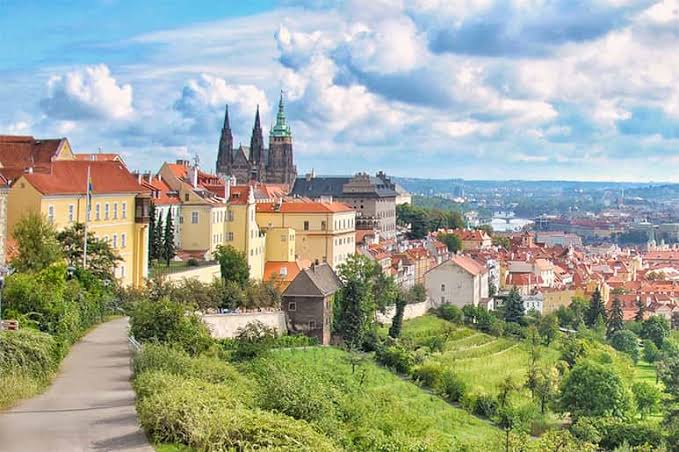

Визначні пам’ятки 🌉
Карлів міст, Празький Град, Староміська площа та астрономічний годинник Орлой — це місця, без яких неможливо уявити знайомство з Прагою. Особливо чарівно тут на світанку, коли вулиці ще майже порожні.

Кухня та гастрономія 🥐
Празька кухня — це ситні гуляші, кнедлики, вепрево коліно та, звісно, трдельник із корицею. А місцеве пиво тут вважають мало не національним скарбом, тому дегустація — обов’язкова частина програми.
Культура та традиції 🎭
У Празі постійно звучить музика: від вуличних скрипалів на Карловому мості до концертів у старовинних костелах. Варто зазирнути на Вишеград, відвідати ляльковий театр і побачити різдвяні ярмарки на Староміській площі.
Особисті історії та враження 📸
Найбільше запам’ятався ранок, коли ми прийшли на Карлів міст ще до появи туристів. Місто потроху прокидалося, над Влтавою стояв туман, а в маленькій кав’ярні вже варили каву.